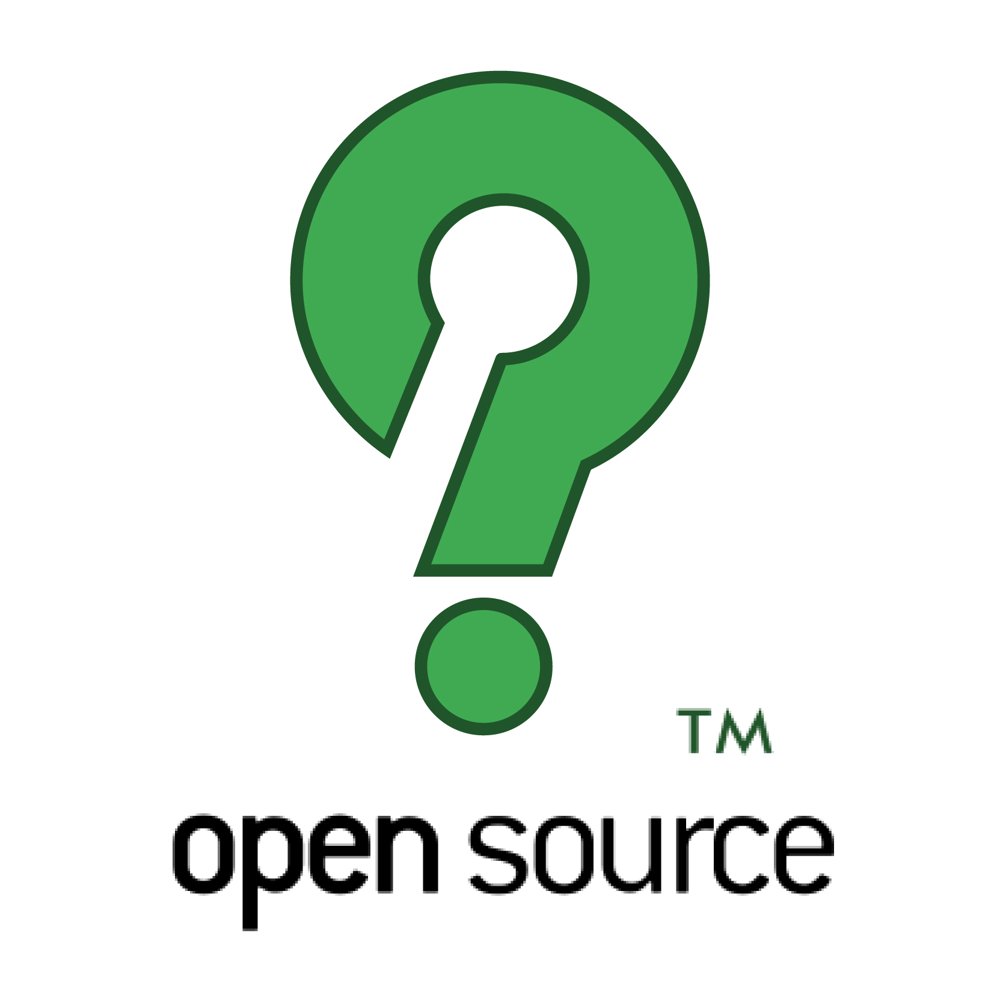
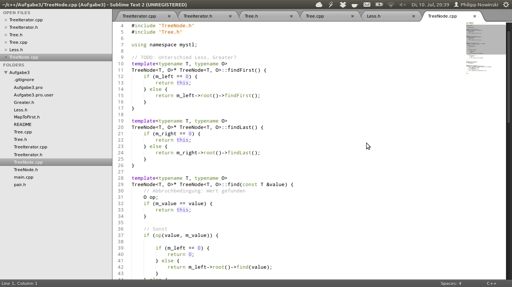
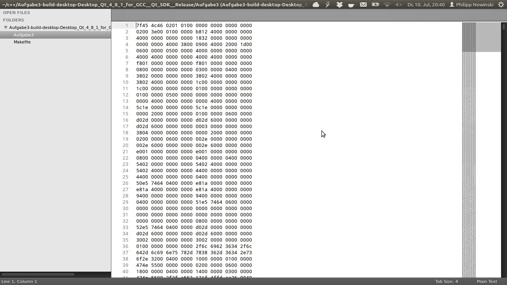
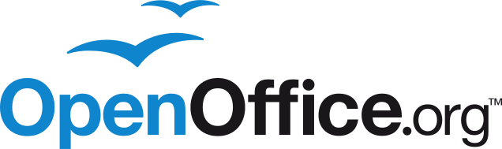
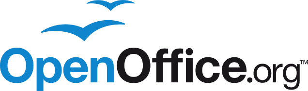
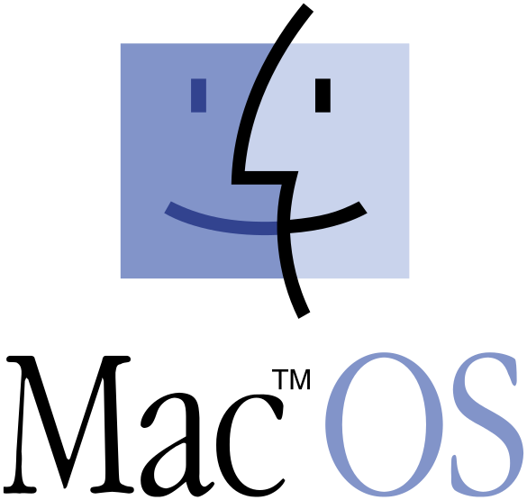

Roadmap
- What is OpenSource?
- The OpenSource landscape
- It has great benefits and is no rocket science
- What can YOU do?

Software consists of two parts
First part: Sourcecode

Second part: Machinecode

What is OpenSource?
- A bunch of software licenses
- sourcecode is public and available for everyone
- license is supposed to encourage further development
History
1998
- Increasing dominance of Internet Explorer on the browser market
- Netscape decides to publish the sourcecode of Navigator
- This will become the popular Mozilla Project
- Bruce Perens and Tim O'Reiley wanted a less idiologic term for the marketing
- They invented the term "OpenSource"
The OpenSource landscape
The OpenSource landscape
 

The OpenSource landscape


The OpenSource landscape

Thanks for your attention!
| 11.06.2012 | Philipp Nowinski | / |